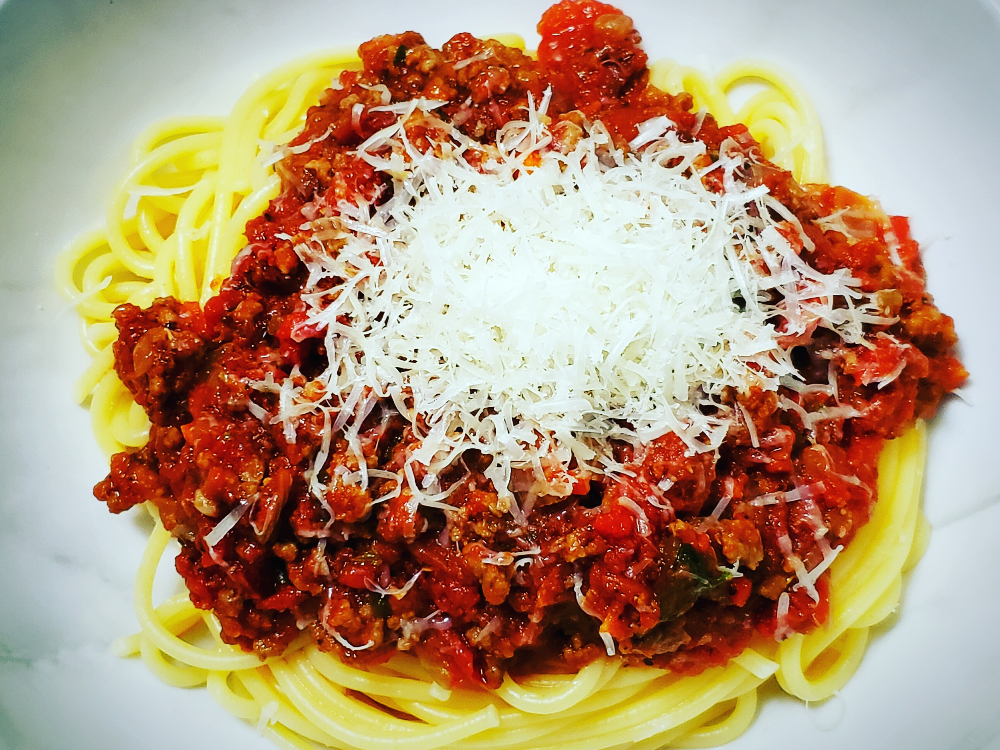

Spaghetti Bolognese

Descrption
The basis of a good spaghetti bolognese is a properly prepared Bolognese sauce. The quality of the ingredients used and the accuracy of its execution translate into the final result. A perfect Bolognese sauce should literally melt in your mouth and have a homogeneous, emulsion structure resulting from long cooking.
We start by melting the bacon thoroughly, it is worth doing it patiently and over low heat to thoroughly melt the fat and get small, nicely browned pieces of meat. Fry the onion in the melted fat and - after it is glazed - the celery and carrots. Put everything into a pot, and in a frying pan, in olive oil, continue frying - this time the meat. I recommend veal if you want to combine it with e.g. pork neck. The meat should be fried quickly and over high heat, preferably in batches. If we put too much meat in the pan at the same time, it will suffocate instead of searing.
Cook the ingredients prepared in this way with the addition of wine, broth and tomatoes until the desired consistency of the sauce and meat is soft - at least 2 hours, although it is worth longer (we can also make Bolognese sauce a day or even two days earlier, it will be even better after reheating). With the prepared sauce, pour over the cooked al dente pasta and sprinkle with grated Parmesan - the spaghetti bolognese is ready :-)
Ingredients
- 1 (16 ounce) package spaghetti
- 2 tablespoons olive oil
- 3 slices bacon, diced
- 1 large onion, finely chopped
- 1 stalk celery, finely chopped
- 1 carrot, finely chopped
- 1 teaspoon dried oregano
- 3 cloves garlic, minced
- 1 pound lean ground beef
- 2 tablespoons balsamic vinegar
- 2 (28 ounce) cans crushed tomatoes
- 2 tablespoons tomato paste
- 2 teaspoons white sugar
- salt and ground black pepper to taste
- 2 tablespoons chopped fresh basil
- ¼ cup freshly grated Parmesan cheese
Steps
- Bring a large pot of lightly salted water to a rolling boil. Cook the spaghetti in the boiling water until cooked through yet firm to the bite, about 12 minutes; drain.
- Heat the olive oil in a large pot over medium heat. Cook the bacon in the oil until crisp, 8 to 10 minutes. Stir the onion, celery, carrot, and oregano into the bacon; continue cooking until the vegetables begin to soften, another 8 to 10 minutes. Add the garlic and cook until fragrant, about 2 minutes. Crumble the ground beef into the vegetable mixture; cook and stir until the beef is completely cooked and no longer pink, 8 to 10 minutes.
- Pour the balsamic vinegar over the ground beef mixture; allow to simmer until the liquid evaporates, about 5 minutes. Stir the crushed tomatoes, tomato paste, and sugar into the ground beef mixture; bring the mixture to a boil, season with salt and black pepper, and remove from heat. Stir the fresh basil into the mixture.
- Ladle the sauce over the cooked spaghetti. Top with Parmesan cheese to serve.
Back to Recipe list